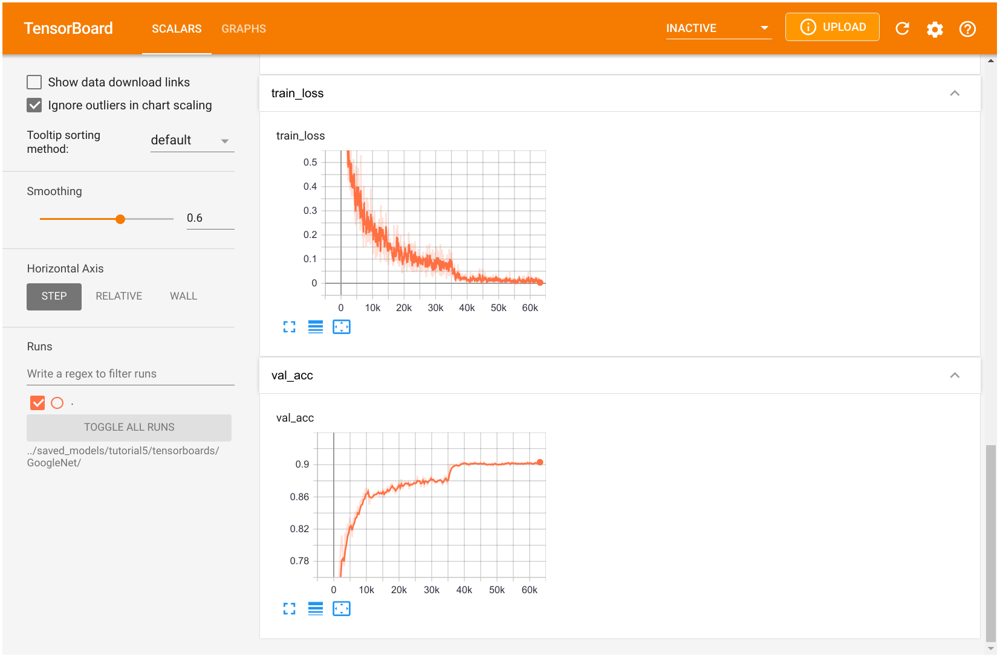
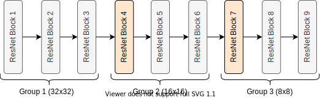

## Standard libraries
import os
import numpy as np
import random
from PIL import Image
from types import SimpleNamespace
## Imports for plotting
import matplotlib.pyplot as plt
%matplotlib inline
from IPython.display import set_matplotlib_formats
set_matplotlib_formats('svg', 'pdf') # For export
import matplotlib
matplotlib.rcParams['lines.linewidth'] = 2.0
import seaborn as sns
sns.reset_orig()
## PyTorch
import torch
import torch.nn as nn
import torch.utils.data as data
import torch.optim as optim
# Torchvision
import torchvision
from torchvision.datasets import CIFAR10
from torchvision import transformsConvolutional networks: examples
Vitaly Vlasov
Lviv University
Modern CNN variants
In this tutorial, we will implement and discuss variants of modern CNN architectures. There have been many different architectures been proposed over the past few years. Some of the most impactful ones, and still relevant today, are the following:
Imports
Seeds
# Path to the folder where the datasets are/should be downloaded (e.g. CIFAR10)
DATASET_PATH = "../data"
# Path to the folder where the pretrained models are saved
CHECKPOINT_PATH = "../saved_models/tutorial5"
# Function for setting the seed
def set_seed(seed):
random.seed(seed)
np.random.seed(seed)
torch.manual_seed(seed)
if torch.mps.is_available():
torch.mps.manual_seed(seed)
#torch.cuda.manual_seed_all(seed)
set_seed(42)
# Ensure that all operations are deterministic on GPU (if used) for reproducibility
torch.backends.mps.deterministic = True
torch.backends.mps.benchmark = False
device = torch.device("mps:0") if torch.mps.is_available() else torch.device("cpu")Pre-trained models
import urllib.request
from urllib.error import HTTPError
# Github URL where saved models are stored for this tutorial
base_url = "https://raw.githubusercontent.com/phlippe/saved_models/main/tutorial5/"
# Files to download
pretrained_files = ["GoogleNet.ckpt", "ResNet.ckpt", "ResNetPreAct.ckpt", "DenseNet.ckpt",
"tensorboards/GoogleNet/events.out.tfevents.googlenet",
"tensorboards/ResNet/events.out.tfevents.resnet",
"tensorboards/ResNetPreAct/events.out.tfevents.resnetpreact",
"tensorboards/DenseNet/events.out.tfevents.densenet"]
# Create checkpoint path if it doesn't exist yet
os.makedirs(CHECKPOINT_PATH, exist_ok=True)
# For each file, check whether it already exists. If not, try downloading it.
for file_name in pretrained_files:
file_path = os.path.join(CHECKPOINT_PATH, file_name)
if "/" in file_name:
os.makedirs(file_path.rsplit("/",1)[0], exist_ok=True)
if not os.path.isfile(file_path):
file_url = base_url + file_name
print(f"Downloading {file_url}...")
try:
urllib.request.urlretrieve(file_url, file_path)
except HTTPError as e:
print("Something went wrong. Please try to download the file from the GDrive folder, or contact the author with the full output including the following error:\n", e)Mean/std
Important
As we have learned from the previous tutorial about initialization, it is important to have the data preprocessed with a zero mean.
train_dataset = CIFAR10(root=DATASET_PATH, train=True, download=True)
DATA_MEANS = (train_dataset.data / 255.0).mean(axis=(0,1,2))
DATA_STD = (train_dataset.data / 255.0).std(axis=(0,1,2))
print("Data mean", DATA_MEANS)
print("Data std", DATA_STD)Data mean [0.49139968 0.48215841 0.44653091]
Data std [0.24703223 0.24348513 0.26158784]Pre-processing
Augmentations
- flip each image horizontally with 50% probability (
transforms.RandomHorizontalFlip). The object class usually does not change when flipping an image, and we don’t expect any image information to be dependent on the horizontal orientation. This would be however different if we would try to detect digits or letters in an image, as those have a certain orientation.) transforms.RandomResizedCrop. This transformation crops the image in a small range, eventually changing the aspect ratio, and scaling it back afterward to the previous size. Therefore, the actual pixel values change while the content or overall semantics of the image stays the same.
Pre-processing
Code
test_transform = transforms.Compose([transforms.ToTensor(),
transforms.Normalize(DATA_MEANS, DATA_STD)
])
# For training, we add some augmentation. Networks are too powerful and would overfit.
train_transform = transforms.Compose([transforms.RandomHorizontalFlip(),
transforms.RandomResizedCrop((32,32), scale=(0.8,1.0), ratio=(0.9,1.1)),
transforms.ToTensor(),
transforms.Normalize(DATA_MEANS, DATA_STD)
])
# Loading the training dataset. We need to split it into a training and validation part
# We need to do a little trick because the validation set should not use the augmentation.
train_dataset = CIFAR10(root=DATASET_PATH, train=True, transform=train_transform, download=True)
val_dataset = CIFAR10(root=DATASET_PATH, train=True, transform=test_transform, download=True)
set_seed(42)
train_set, _ = torch.utils.data.random_split(train_dataset, [45000, 5000])
set_seed(42)
_, val_set = torch.utils.data.random_split(val_dataset, [45000, 5000])
# Loading the test set
test_set = CIFAR10(root=DATASET_PATH, train=False, transform=test_transform, download=True)
# We define a set of data loaders that we can use for various purposes later.
train_loader = data.DataLoader(train_set, batch_size=128, shuffle=True, drop_last=True, pin_memory=True, num_workers=4)
val_loader = data.DataLoader(val_set, batch_size=128, shuffle=False, drop_last=False, num_workers=4)
test_loader = data.DataLoader(test_set, batch_size=128, shuffle=False, drop_last=False, num_workers=4)Pre-processing
Visualization
NUM_IMAGES = 4
images = [train_dataset[idx][0] for idx in range(NUM_IMAGES)]
orig_images = [Image.fromarray(train_dataset.data[idx]) for idx in range(NUM_IMAGES)]
orig_images = [test_transform(img) for img in orig_images]
img_grid = torchvision.utils.make_grid(torch.stack(images + orig_images, dim=0), nrow=4, normalize=True, pad_value=0.5)
img_grid = img_grid.permute(1, 2, 0)
plt.figure(figsize=(8,8))
plt.title("Augmentation examples on CIFAR10")
plt.imshow(img_grid)
plt.axis('off')
plt.show()
plt.close()PyTorch Lightning
Overview
PyTorch Lightning is a framework that simplifies your code needed to train, evaluate, and test a model in PyTorch. It also handles logging into TensorBoard, a visualization toolkit for ML experiments, and saving model checkpoints automatically with minimal code overhead from our side.
PyTorch Lightning
PyTorch Lightning
Plan
In PyTorch Lightning, we define pl.LightningModule’s (inheriting from torch.nn.Module) that organize our code into 5 main sections:
- Initialization (
__init__), where we create all necessary parameters/models - Optimizers (
configure_optimizers) where we create the optimizers, learning rate scheduler, etc. - Training loop (
training_step) where we only have to define the loss calculation for a single batch (the loop of optimizer.zero_grad(), loss.backward() and optimizer.step(), as well as any logging/saving operation, is done in the background) - Validation loop (
validation_step) where similarly to the training, we only have to define what should happen per step - Test loop (
test_step) which is the same as validation, only on a test set.
Therefore, we don’t abstract the PyTorch code, but rather organize it and define some default operations that are commonly used. If you need to change something else in your training/validation/test loop, there are many possible functions you can overwrite (see the docs for details).
PyTorch Lightning
class CIFARModule(pl.LightningModule):
def __init__(self, model_name, model_hparams, optimizer_name, optimizer_hparams):
"""
Inputs:
model_name - Name of the model/CNN to run. Used for creating the model (see function below)
model_hparams - Hyperparameters for the model, as dictionary.
optimizer_name - Name of the optimizer to use. Currently supported: Adam, SGD
optimizer_hparams - Hyperparameters for the optimizer, as dictionary. This includes learning rate, weight decay, etc.
"""
super().__init__()
# Exports the hyperparameters to a YAML file, and create "self.hparams" namespace
self.save_hyperparameters()
# Create model
self.model = create_model(model_name, model_hparams)
# Create loss module
self.loss_module = nn.CrossEntropyLoss()
# Example input for visualizing the graph in Tensorboard
self.example_input_array = torch.zeros((1, 3, 32, 32), dtype=torch.float32)
def forward(self, imgs):
# Forward function that is run when visualizing the graph
return self.model(imgs)
def configure_optimizers(self):
# We will support Adam or SGD as optimizers.
if self.hparams.optimizer_name == "Adam":
# AdamW is Adam with a correct implementation of weight decay (see here for details: https://arxiv.org/pdf/1711.05101.pdf)
optimizer = optim.AdamW(
self.parameters(), **self.hparams.optimizer_hparams)
elif self.hparams.optimizer_name == "SGD":
optimizer = optim.SGD(self.parameters(), **self.hparams.optimizer_hparams)
else:
assert False, f"Unknown optimizer: \"{self.hparams.optimizer_name}\""
# We will reduce the learning rate by 0.1 after 100 and 150 epochs
scheduler = optim.lr_scheduler.MultiStepLR(
optimizer, milestones=[100, 150], gamma=0.1)
return [optimizer], [scheduler]
def training_step(self, batch, batch_idx):
# "batch" is the output of the training data loader.
imgs, labels = batch
preds = self.model(imgs)
loss = self.loss_module(preds, labels)
acc = (preds.argmax(dim=-1) == labels).float().mean()
# Logs the accuracy per epoch to tensorboard (weighted average over batches)
self.log('train_acc', acc, on_step=False, on_epoch=True)
self.log('train_loss', loss)
return loss # Return tensor to call ".backward" on
def validation_step(self, batch, batch_idx):
imgs, labels = batch
preds = self.model(imgs).argmax(dim=-1)
acc = (labels == preds).float().mean()
# By default logs it per epoch (weighted average over batches)
self.log('val_acc', acc)
def test_step(self, batch, batch_idx):
imgs, labels = batch
preds = self.model(imgs).argmax(dim=-1)
acc = (labels == preds).float().mean()
# By default logs it per epoch (weighted average over batches), and returns it afterwards
self.log('test_acc', acc)PyTorch Lightning
Callbacks
Callbacks are self-contained functions that contain the non-essential logic of your Lightning Module. They are usually called after finishing a training epoch, but can also influence other parts of your training loop. For instance, we will use the following two pre-defined callbacks:
LearningRateMonitor: the learning rate monitor adds the current learning rate to our TensorBoard, which helps to verify that our learning rate scheduler works correctly.ModelCheckpoint: allows you to customize the saving routine of your checkpoints. For instance, how many checkpoints to keep, when to save, which metric to look out for, etc.
PyTorch Lightning
PyTorch Lightning
PyTorch Lightning
Trainer
Besides the Lightning module, the second most important module in PyTorch Lightning is the Trainer. The trainer is responsible to execute the training steps defined in the Lightning module and completes the framework. For a full overview, see the documentation. The most important functions we use below are:
trainer.fit: Takes as input a lightning module, a training dataset, and an (optional) validation dataset. This function trains the given module on the training dataset with occasional validation (default once per epoch, can be changed)trainer.test: Takes as input a model and a dataset on which we want to test. It returns the test metric on the dataset.
For training and testing, we don’t have to worry about things like setting the model to eval mode (model.eval()) as this is all done automatically.
PyTorch Lightning
def train_model(model_name, save_name=None, **kwargs):
"""
Inputs:
model_name - Name of the model you want to run. Is used to look up the class in "model_dict"
save_name (optional) - If specified, this name will be used for creating the checkpoint and logging directory.
"""
if save_name is None:
save_name = model_name
# Create a PyTorch Lightning trainer with the generation callback
trainer = pl.Trainer(default_root_dir=os.path.join(CHECKPOINT_PATH, save_name), # Where to save models
accelerator="gpu" if str(device).startswith("cuda") else "cpu", # We run on a GPU (if possible)
devices=1, # How many GPUs/CPUs we want to use (1 is enough for the notebooks)
max_epochs=180, # How many epochs to train for if no patience is set
callbacks=[ModelCheckpoint(save_weights_only=True, mode="max", monitor="val_acc"), # Save the best checkpoint based on the maximum val_acc recorded. Saves only weights and not optimizer
LearningRateMonitor("epoch")], # Log learning rate every epoch
enable_progress_bar=True) # Set to False if you do not want a progress bar
trainer.logger._log_graph = True # If True, we plot the computation graph in tensorboard
trainer.logger._default_hp_metric = None # Optional logging argument that we don't need
# Check whether pretrained model exists. If yes, load it and skip training
pretrained_filename = os.path.join(CHECKPOINT_PATH, save_name + ".ckpt")
if os.path.isfile(pretrained_filename):
print(f"Found pretrained model at {pretrained_filename}, loading...")
model = CIFARModule.load_from_checkpoint(pretrained_filename) # Automatically loads the model with the saved hyperparameters
else:
pl.seed_everything(42) # To be reproducable
model = CIFARModule(model_name=model_name, **kwargs)
trainer.fit(model, train_loader, val_loader)
model = CIFARModule.load_from_checkpoint(trainer.checkpoint_callback.best_model_path) # Load best checkpoint after training
# Test best model on validation and test set
val_result = trainer.test(model, val_loader, verbose=False)
test_result = trainer.test(model, test_loader, verbose=False)
result = {"test": test_result[0]["test_acc"], "val": val_result[0]["test_acc"]}
return model, resultInception
GoogleNet (2014)
The GoogleNet, won the ImageNet Challenge because of its usage of the Inception modules. There have been many follow-up works (Inception-v2, Inception-v3, Inception-v4, Inception-ResNet,…). The follow-up works mainly focus on increasing efficiency and enabling very deep Inception networks.
Inception
Inception block
An Inception block applies four convolution blocks separately on the same feature map: a 1x1, 3x3, and 5x5 convolution, and a max pool operation.
- This allows the network to look at the same data with different receptive fields. Of course, learning only 5x5 convolution would be theoretically more powerful. However, this is not only more computation and memory heavy but also tends to overfit much easier.
- The additional 1x1 convolutions before the 3x3 and 5x5 convolutions are used for dimensionality reduction. This is especially crucial as the feature maps of all branches are merged afterward, and we don’t want any explosion of feature size. As 5x5 convolutions are 25 times more expensive than 1x1 convolutions, we can save a lot of computation and parameters by reducing the dimensionality before the large convolutions.

Inception
class InceptionBlock(nn.Module):
def __init__(self, c_in, c_red : dict, c_out : dict, act_fn):
"""
Inputs:
c_in - Number of input feature maps from the previous layers
c_red - Dictionary with keys "3x3" and "5x5" specifying the output of the dimensionality reducing 1x1 convolutions
c_out - Dictionary with keys "1x1", "3x3", "5x5", and "max"
act_fn - Activation class constructor (e.g. nn.ReLU)
"""
super().__init__()
# 1x1 convolution branch
self.conv_1x1 = nn.Sequential(
nn.Conv2d(c_in, c_out["1x1"], kernel_size=1),
nn.BatchNorm2d(c_out["1x1"]),
act_fn()
)
# 3x3 convolution branch
self.conv_3x3 = nn.Sequential(
nn.Conv2d(c_in, c_red["3x3"], kernel_size=1),
nn.BatchNorm2d(c_red["3x3"]),
act_fn(),
nn.Conv2d(c_red["3x3"], c_out["3x3"], kernel_size=3, padding=1),
nn.BatchNorm2d(c_out["3x3"]),
act_fn()
)
# 5x5 convolution branch
self.conv_5x5 = nn.Sequential(
nn.Conv2d(c_in, c_red["5x5"], kernel_size=1),
nn.BatchNorm2d(c_red["5x5"]),
act_fn(),
nn.Conv2d(c_red["5x5"], c_out["5x5"], kernel_size=5, padding=2),
nn.BatchNorm2d(c_out["5x5"]),
act_fn()
)
# Max-pool branch
self.max_pool = nn.Sequential(
nn.MaxPool2d(kernel_size=3, padding=1, stride=1),
nn.Conv2d(c_in, c_out["max"], kernel_size=1),
nn.BatchNorm2d(c_out["max"]),
act_fn()
)
def forward(self, x):
x_1x1 = self.conv_1x1(x)
x_3x3 = self.conv_3x3(x)
x_5x5 = self.conv_5x5(x)
x_max = self.max_pool(x)
x_out = torch.cat([x_1x1, x_3x3, x_5x5, x_max], dim=1)
return x_outInception
GoogleNet modifications
The GoogleNet architecture consists of stacking multiple Inception blocks with occasional max pooling to reduce the height and width of the feature maps. The original GoogleNet was designed for image sizes of ImageNet (224x224 pixels) and had almost 7 million parameters. As we train on CIFAR10 with image sizes of 32x32, we don’t require such a heavy architecture, and instead, apply a reduced version.
- The number of channels for dimensionality reduction and output per filter (1x1, 3x3, 5x5, and max pooling) need to be manually specified and can be changed if interested
- The general intuition is to have the most filters for the 3x3 convolutions, as they are powerful enough to take the context into account while requiring almost a third of the parameters of the 5x5 convolution.
Inception
class GoogleNet(nn.Module):
def __init__(self, num_classes=10, act_fn_name="relu", **kwargs):
super().__init__()
self.hparams = SimpleNamespace(num_classes=num_classes,
act_fn_name=act_fn_name,
act_fn=act_fn_by_name[act_fn_name])
self._create_network()
self._init_params()
def _create_network(self):
# A first convolution on the original image to scale up the channel size
self.input_net = nn.Sequential(
nn.Conv2d(3, 64, kernel_size=3, padding=1),
nn.BatchNorm2d(64),
self.hparams.act_fn()
)
# Stacking inception blocks
self.inception_blocks = nn.Sequential(
InceptionBlock(64, c_red={"3x3": 32, "5x5": 16}, c_out={"1x1": 16, "3x3": 32, "5x5": 8, "max": 8}, act_fn=self.hparams.act_fn),
InceptionBlock(64, c_red={"3x3": 32, "5x5": 16}, c_out={"1x1": 24, "3x3": 48, "5x5": 12, "max": 12}, act_fn=self.hparams.act_fn),
nn.MaxPool2d(3, stride=2, padding=1), # 32x32 => 16x16
InceptionBlock(96, c_red={"3x3": 32, "5x5": 16}, c_out={"1x1": 24, "3x3": 48, "5x5": 12, "max": 12}, act_fn=self.hparams.act_fn),
InceptionBlock(96, c_red={"3x3": 32, "5x5": 16}, c_out={"1x1": 16, "3x3": 48, "5x5": 16, "max": 16}, act_fn=self.hparams.act_fn),
InceptionBlock(96, c_red={"3x3": 32, "5x5": 16}, c_out={"1x1": 16, "3x3": 48, "5x5": 16, "max": 16}, act_fn=self.hparams.act_fn),
InceptionBlock(96, c_red={"3x3": 32, "5x5": 16}, c_out={"1x1": 32, "3x3": 48, "5x5": 24, "max": 24}, act_fn=self.hparams.act_fn),
nn.MaxPool2d(3, stride=2, padding=1), # 16x16 => 8x8
InceptionBlock(128, c_red={"3x3": 48, "5x5": 16}, c_out={"1x1": 32, "3x3": 64, "5x5": 16, "max": 16}, act_fn=self.hparams.act_fn),
InceptionBlock(128, c_red={"3x3": 48, "5x5": 16}, c_out={"1x1": 32, "3x3": 64, "5x5": 16, "max": 16}, act_fn=self.hparams.act_fn)
)
# Mapping to classification output
self.output_net = nn.Sequential(
nn.AdaptiveAvgPool2d((1, 1)),
nn.Flatten(),
nn.Linear(128, self.hparams.num_classes)
)
def _init_params(self):
# Based on our discussion in Tutorial 4, we should initialize the convolutions according to the activation function
for m in self.modules():
if isinstance(m, nn.Conv2d):
nn.init.kaiming_normal_(
m.weight, nonlinearity=self.hparams.act_fn_name)
elif isinstance(m, nn.BatchNorm2d):
nn.init.constant_(m.weight, 1)
nn.init.constant_(m.bias, 0)
def forward(self, x):
x = self.input_net(x)
x = self.inception_blocks(x)
x = self.output_net(x)
return xInception
Inception
Inception
Inception
Scalar tab: track development of single numbers. Graph tab shows us the network architecture organized by building blocks from the input to the output.
ResNet
Overview
The ResNet paper is one of the most cited AI papers, and has been the foundation for neural networks with more than 1,000 layers. Despite its simplicity, the idea of residual connections is highly effective as it supports stable gradient propagation through the network.
Modeling
Instead of modeling \[ x_{l+1}=F(x_{l}), \] we model \[ x_{l+1}=x_{l}+F(x_{l}) \] where \(F\) is a non-linear mapping (usually a sequence of NN modules likes convolutions, activation functions, and normalizations).
ResNet
Backpropagation
If we do backpropagation on such residual connections, we obtain: \[ \frac{\partial x_{l+1}}{\partial x_{l}} = \mathbf{I} + \frac{\partial F(x_{l})}{\partial x_{l}} \]
The bias towards the identity matrix guarantees a stable gradient propagation being less effected by \(F\) itself.
ResNet
Variants
There have been many variants of ResNet proposed, which mostly concern the function \(F\), or operations applied on the sum. In this tutorial, we look at two of them: the original ResNet block, and the Pre-Activation ResNet block. We visually compare the blocks below (figure credit - He et al.):
ResNet

The original ResNet block applies a non-linear activation function, usually ReLU, after the skip connection. In contrast, the pre-activation ResNet block applies the non-linearity at the beginning of \(F\).
ResNet
Preliminaries: original ResNet block
The visualization above already shows what layers are included in \(F\). One special case we have to handle is when we want to reduce the image dimensions in terms of width and height.
- The basic ResNet block requires \(F(x_{l})\) to be of the same shape as \(x_{l}\).
- Thus, we need to change the dimensionality of \(x_{l}\) as well before adding to \(F(x_{l})\).
- The original implementation used an identity mapping with stride 2 and padded additional feature dimensions with 0. However, the more common implementation is to use a 1x1 convolution with stride 2 as it allows us to change the feature dimensionality while being efficient in parameter and computation cost.
ResNet
class ResNetBlock(nn.Module):
def __init__(self, c_in, act_fn, subsample=False, c_out=-1):
"""
Inputs:
c_in - Number of input features
act_fn - Activation class constructor (e.g. nn.ReLU)
subsample - If True, we want to apply a stride inside the block and reduce the output shape by 2 in height and width
c_out - Number of output features. Note that this is only relevant if subsample is True, as otherwise, c_out = c_in
"""
super().__init__()
if not subsample:
c_out = c_in
# Network representing F
self.net = nn.Sequential(
nn.Conv2d(c_in, c_out, kernel_size=3, padding=1, stride=1 if not subsample else 2, bias=False), # No bias needed as the Batch Norm handles it
nn.BatchNorm2d(c_out),
act_fn(),
nn.Conv2d(c_out, c_out, kernel_size=3, padding=1, bias=False),
nn.BatchNorm2d(c_out)
)
# 1x1 convolution with stride 2 means we take the upper left value, and transform it to new output size
self.downsample = nn.Conv2d(c_in, c_out, kernel_size=1, stride=2) if subsample else None
self.act_fn = act_fn()
def forward(self, x):
z = self.net(x)
if self.downsample is not None:
x = self.downsample(x)
out = z + x
out = self.act_fn(out)
return outResNet
Preliminaries: pre-activation ResNet block
For this, we have to change the order of layer in self.net, and do not apply an activation function on the output. Additionally, the downsampling operation has to apply a non-linearity as well as the input, \(x_l\), has not been processed by a non-linearity yet.
class PreActResNetBlock(nn.Module):
def __init__(self, c_in, act_fn, subsample=False, c_out=-1):
"""
Inputs:
c_in - Number of input features
act_fn - Activation class constructor (e.g. nn.ReLU)
subsample - If True, we want to apply a stride inside the block and reduce the output shape by 2 in height and width
c_out - Number of output features. Note that this is only relevant if subsample is True, as otherwise, c_out = c_in
"""
super().__init__()
if not subsample:
c_out = c_in
# Network representing F
self.net = nn.Sequential(
nn.BatchNorm2d(c_in),
act_fn(),
nn.Conv2d(c_in, c_out, kernel_size=3, padding=1, stride=1 if not subsample else 2, bias=False),
nn.BatchNorm2d(c_out),
act_fn(),
nn.Conv2d(c_out, c_out, kernel_size=3, padding=1, bias=False)
)
# 1x1 convolution can apply non-linearity as well, but not strictly necessary
self.downsample = nn.Sequential(
nn.BatchNorm2d(c_in),
act_fn(),
nn.Conv2d(c_in, c_out, kernel_size=1, stride=2, bias=False)
) if subsample else None
def forward(self, x):
z = self.net(x)
if self.downsample is not None:
x = self.downsample(x)
out = z + x
return outResNet
Dictionary mapping
Similarly to the model selection, we define a dictionary to create a mapping from string to block class. We will use the string name as hyperparameter value in our model to choose between the ResNet blocks.
ResNet
Block stacking
The overall ResNet architecture consists of stacking multiple ResNet blocks, of which some are downsampling the input. Hence, if we say the ResNet has [3,3,3] blocks, it means that we have 3 times a group of 3 ResNet blocks, where a subsampling is taking place in the fourth and seventh block.

The three groups operate on the resolutions \(32\times32\), \(16\times16\) and \(8\times8\) respectively. The blocks in orange denote ResNet blocks with downsampling. The same notation is used by many other implementations such as in the torchvision library from PyTorch.
ResNet
class ResNet(nn.Module):
def __init__(self, num_classes=10, num_blocks=[3,3,3], c_hidden=[16,32,64], act_fn_name="relu", block_name="ResNetBlock", **kwargs):
"""
Inputs:
num_classes - Number of classification outputs (10 for CIFAR10)
num_blocks - List with the number of ResNet blocks to use. The first block of each group uses downsampling, except the first.
c_hidden - List with the hidden dimensionalities in the different blocks. Usually multiplied by 2 the deeper we go.
act_fn_name - Name of the activation function to use, looked up in "act_fn_by_name"
block_name - Name of the ResNet block, looked up in "resnet_blocks_by_name"
"""
super().__init__()
assert block_name in resnet_blocks_by_name
self.hparams = SimpleNamespace(num_classes=num_classes,
c_hidden=c_hidden,
num_blocks=num_blocks,
act_fn_name=act_fn_name,
act_fn=act_fn_by_name[act_fn_name],
block_class=resnet_blocks_by_name[block_name])
self._create_network()
self._init_params()
def _create_network(self):
c_hidden = self.hparams.c_hidden
# A first convolution on the original image to scale up the channel size
if self.hparams.block_class == PreActResNetBlock: # => Don't apply non-linearity on output
self.input_net = nn.Sequential(
nn.Conv2d(3, c_hidden[0], kernel_size=3, padding=1, bias=False)
)
else:
self.input_net = nn.Sequential(
nn.Conv2d(3, c_hidden[0], kernel_size=3, padding=1, bias=False),
nn.BatchNorm2d(c_hidden[0]),
self.hparams.act_fn()
)
# Creating the ResNet blocks
blocks = []
for block_idx, block_count in enumerate(self.hparams.num_blocks):
for bc in range(block_count):
subsample = (bc == 0 and block_idx > 0) # Subsample the first block of each group, except the very first one.
blocks.append(
self.hparams.block_class(c_in=c_hidden[block_idx if not subsample else (block_idx-1)],
act_fn=self.hparams.act_fn,
subsample=subsample,
c_out=c_hidden[block_idx])
)
self.blocks = nn.Sequential(*blocks)
# Mapping to classification output
self.output_net = nn.Sequential(
nn.AdaptiveAvgPool2d((1,1)),
nn.Flatten(),
nn.Linear(c_hidden[-1], self.hparams.num_classes)
)
def _init_params(self):
# Based on our discussion in Tutorial 4, we should initialize the convolutions according to the activation function
# Fan-out focuses on the gradient distribution, and is commonly used in ResNets
for m in self.modules():
if isinstance(m, nn.Conv2d):
nn.init.kaiming_normal_(m.weight, mode='fan_out', nonlinearity=self.hparams.act_fn_name)
elif isinstance(m, nn.BatchNorm2d):
nn.init.constant_(m.weight, 1)
nn.init.constant_(m.bias, 0)
def forward(self, x):
x = self.input_net(x)
x = self.blocks(x)
x = self.output_net(x)
return xResNet
ResNet
Training
SGD instead of Adam. ResNet has been shown to produce smoother loss surfaces than networks without skip connection (see Li et al., 2018 for details). A possible visualization of the loss surface with/out skip connections is below (figure credit - Li et al.):
ResNet
Original ResNet training
resnet_model, resnet_results = train_model(model_name="ResNet",
model_hparams={"num_classes": 10,
"c_hidden": [16,32,64],
"num_blocks": [3,3,3],
"act_fn_name": "relu"},
optimizer_name="SGD",
optimizer_hparams={"lr": 0.1,
"momentum": 0.9,
"weight_decay": 1e-4})Found pretrained model at ../saved_models/tutorial5/ResNet.ckpt, loading...ResNet
Pre-activation ResNet training
resnetpreact_model, resnetpreact_results = train_model(model_name="ResNet",
model_hparams={"num_classes": 10,
"c_hidden": [16,32,64],
"num_blocks": [3,3,3],
"act_fn_name": "relu",
"block_name": "PreActResNetBlock"},
optimizer_name="SGD",
optimizer_hparams={"lr": 0.1,
"momentum": 0.9,
"weight_decay": 1e-4},
save_name="ResNetPreAct")Found pretrained model at ../saved_models/tutorial5/ResNetPreAct.ckpt, loading...ResNet

DenseNet
Overview
DenseNet is another architecture for enabling very deep neural networks and takes a slightly different perspective on residual connections.
Instead of modeling the difference between layers, DenseNet considers residual connections as a possible way to reuse features across layers, removing any necessity to learn redundant feature maps.
- If we go deeper into the network, the model learns abstract features to recognize patterns.
- However, some complex patterns consist of a combination of abstract features (e.g. hand, face, etc.), and low-level features (e.g. edges, basic color, etc.).
- To find these low-level features in the deep layers, standard CNNs have to learn copy such feature maps, which wastes a lot of parameter complexity.
DenseNet provides an efficient way of reusing features by having each convolution depends on all previous input features, but add only a small amount of filters to it. See the figure below for an illustration (figure credit - Hu et al.):
DenseNet

The last layer, called the transition layer, is responsible for reducing the dimensionality of the feature maps in height, width, and channel size.
DenseNet
Implementation
We split the implementation of the layers in DenseNet into three parts: a DenseLayer, and a DenseBlock, and a TransitionLayer.
DenseLayer
The module DenseLayer implements a single layer inside a dense block. It applies a 1x1 convolution for dimensionality reduction with a subsequential 3x3 convolution. The output channels are concatenated to the originals and returned. Note that we apply the Batch Normalization as the first layer of each block. This allows slightly different activations for the same features to different layers, depending on what is needed.
DenseNet
DenseLayer
class DenseLayer(nn.Module):
def __init__(self, c_in, bn_size, growth_rate, act_fn):
"""
Inputs:
c_in - Number of input channels
bn_size - Bottleneck size (factor of growth rate) for the output of the 1x1 convolution. Typically between 2 and 4.
growth_rate - Number of output channels of the 3x3 convolution
act_fn - Activation class constructor (e.g. nn.ReLU)
"""
super().__init__()
self.net = nn.Sequential(
nn.BatchNorm2d(c_in),
act_fn(),
nn.Conv2d(c_in, bn_size * growth_rate, kernel_size=1, bias=False),
nn.BatchNorm2d(bn_size * growth_rate),
act_fn(),
nn.Conv2d(bn_size * growth_rate, growth_rate, kernel_size=3, padding=1, bias=False)
)
def forward(self, x):
out = self.net(x)
out = torch.cat([out, x], dim=1)
return outDenseNet
DenseBlock
class DenseBlock(nn.Module):
def __init__(self, c_in, num_layers, bn_size, growth_rate, act_fn):
"""
Inputs:
c_in - Number of input channels
num_layers - Number of dense layers to apply in the block
bn_size - Bottleneck size to use in the dense layers
growth_rate - Growth rate to use in the dense layers
act_fn - Activation function to use in the dense layers
"""
super().__init__()
layers = []
for layer_idx in range(num_layers):
layers.append(
DenseLayer(c_in=c_in + layer_idx * growth_rate, # Input channels are original plus the feature maps from previous layers
bn_size=bn_size,
growth_rate=growth_rate,
act_fn=act_fn)
)
self.block = nn.Sequential(*layers)
def forward(self, x):
out = self.block(x)
return outDenseNet
TransitionLayer
Takes as input the final output of a dense block and reduces its channel dimensionality using a 1x1 convolution. To reduce the height and width dimension, we take a slightly different approach than in ResNet and apply an average pooling with kernel size 2 and stride 2. This is because we don’t have an additional connection to the output that would consider the full 2x2 patch instead of a single value. Besides, it is more parameter efficient than using a 3x3 convolution with stride 2.
class TransitionLayer(nn.Module):
def __init__(self, c_in, c_out, act_fn):
super().__init__()
self.transition = nn.Sequential(
nn.BatchNorm2d(c_in),
act_fn(),
nn.Conv2d(c_in, c_out, kernel_size=1, bias=False),
nn.AvgPool2d(kernel_size=2, stride=2) # Average the output for each 2x2 pixel group
)
def forward(self, x):
return self.transition(x)DenseNet
Everything together
class DenseNet(nn.Module):
def __init__(self, num_classes=10, num_layers=[6,6,6,6], bn_size=2, growth_rate=16, act_fn_name="relu", **kwargs):
super().__init__()
self.hparams = SimpleNamespace(num_classes=num_classes,
num_layers=num_layers,
bn_size=bn_size,
growth_rate=growth_rate,
act_fn_name=act_fn_name,
act_fn=act_fn_by_name[act_fn_name])
self._create_network()
self._init_params()
def _create_network(self):
c_hidden = self.hparams.growth_rate * self.hparams.bn_size # The start number of hidden channels
# A first convolution on the original image to scale up the channel size
self.input_net = nn.Sequential(
nn.Conv2d(3, c_hidden, kernel_size=3, padding=1) # No batch norm or activation function as done inside the Dense layers
)
# Creating the dense blocks, eventually including transition layers
blocks = []
for block_idx, num_layers in enumerate(self.hparams.num_layers):
blocks.append(
DenseBlock(c_in=c_hidden,
num_layers=num_layers,
bn_size=self.hparams.bn_size,
growth_rate=self.hparams.growth_rate,
act_fn=self.hparams.act_fn)
)
c_hidden = c_hidden + num_layers * self.hparams.growth_rate # Overall output of the dense block
if block_idx < len(self.hparams.num_layers)-1: # Don't apply transition layer on last block
blocks.append(
TransitionLayer(c_in=c_hidden,
c_out=c_hidden // 2,
act_fn=self.hparams.act_fn))
c_hidden = c_hidden // 2
self.blocks = nn.Sequential(*blocks)
# Mapping to classification output
self.output_net = nn.Sequential(
nn.BatchNorm2d(c_hidden), # The features have not passed a non-linearity until here.
self.hparams.act_fn(),
nn.AdaptiveAvgPool2d((1,1)),
nn.Flatten(),
nn.Linear(c_hidden, self.hparams.num_classes)
)
def _init_params(self):
# Based on our discussion in Tutorial 4, we should initialize the convolutions according to the activation function
for m in self.modules():
if isinstance(m, nn.Conv2d):
nn.init.kaiming_normal_(m.weight, nonlinearity=self.hparams.act_fn_name)
elif isinstance(m, nn.BatchNorm2d):
nn.init.constant_(m.weight, 1)
nn.init.constant_(m.bias, 0)
def forward(self, x):
x = self.input_net(x)
x = self.blocks(x)
x = self.output_net(x)
return xDenseNet
DenseNet
Training
DenseNet is more parameter efficient than ResNet while achieving a similar or even better performance.
densenet_model, densenet_results = train_model(model_name="DenseNet",
model_hparams={"num_classes": 10,
"num_layers": [6,6,6,6],
"bn_size": 2,
"growth_rate": 16,
"act_fn_name": "relu"},
optimizer_name="Adam",
optimizer_hparams={"lr": 1e-3,
"weight_decay": 1e-4})Found pretrained model at ../saved_models/tutorial5/DenseNet.ckpt, loading...DenseNet

Comparison
import tabulate
from IPython.display import display, HTML
all_models = [
("GoogleNet", googlenet_results, googlenet_model),
("ResNet", resnet_results, resnet_model),
("ResNetPreAct", resnetpreact_results, resnetpreact_model),
("DenseNet", densenet_results, densenet_model)
]
table = [[model_name,
f"{100.0*model_results['val']:4.2f}%",
f"{100.0*model_results['test']:4.2f}%",
"{:,}".format(sum([np.prod(p.shape) for p in model.parameters()]))]
for model_name, model_results, model in all_models]
display(HTML(tabulate.tabulate(table, tablefmt='html', headers=["Model", "Val Accuracy", "Test Accuracy", "Num Parameters"])))| Model | Val Accuracy | Test Accuracy | Num Parameters |
|---|---|---|---|
| GoogleNet | 90.40% | 89.70% | 260,650 |
| ResNet | 91.84% | 91.06% | 272,378 |
| ResNetPreAct | 91.80% | 91.07% | 272,250 |
| DenseNet | 90.72% | 90.23% | 239,146 |